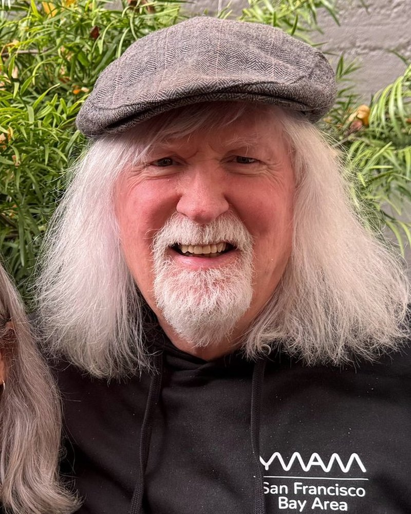

Tim Svoboda
President · YWAM San Francisco Bay Area DirectorTimothy Svoboda served as the International Cities Coordinator for Youth With A Mission and currently serves as the City Coordinator for YWAM San Francisco and the Bay Area. Tim, his wife and children have served in India from 1983 to 2007. Tim was the National Director for YWAM India, the South Asia Urban Ministry Coordinator and the Chennai City Coordinator. YWAM Chennai has developed into a decentralized movement of 17 focused teams that are living incarnationally and reaching out to leprosy patients, slum dwellers, university students, urban middle class people, Muslims, and into other sectors of society. Tim also was one of the founders for Chennai Transformation Network which is a movement that unites the Christians of the city for transformational ministry. Tim and Karol currently live in San Francisco giving leadership to the ministries of YWAM in the Bay Area. Tim has also served on the Global Leadership Team for YWAM international and locally Tim has served on several San Francisco faith initiatives. Tim earned his Doctorate in Ministry from the Bakke Graduate University in 2007.